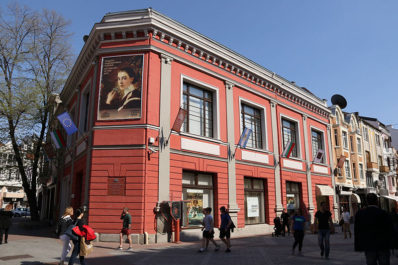
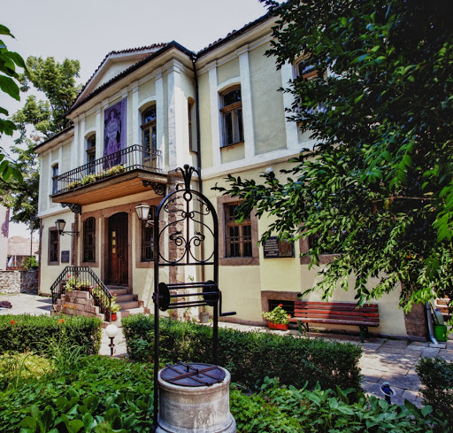
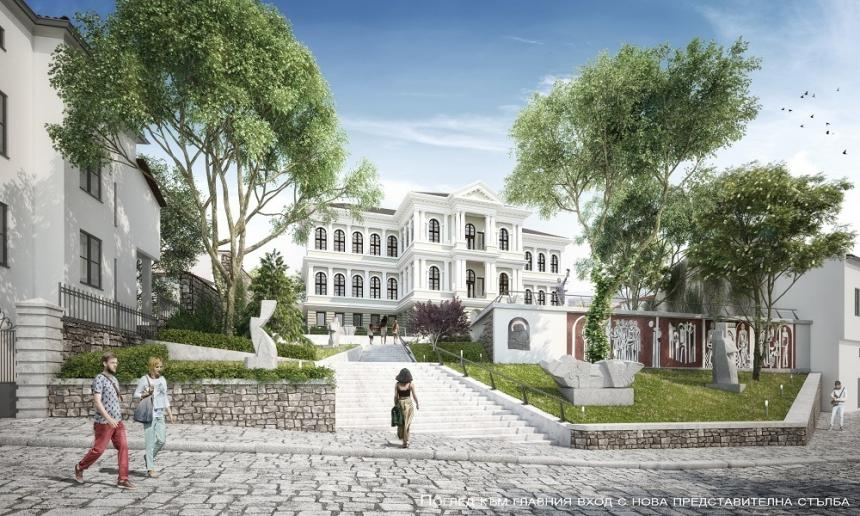

Изобразително изкуство
Изобразително изкуство и галерии
Пловдив е развит център на иконописта още от Средновековието. През Възраждането в града идват да работят майстори зографи от цялата страна, сред които са Димитър Зограф и синът му Зафир (Станислав Доспевски), Захари Зограф, Георги Данчов и др. След Освобождението, когато Пловдив е столица на Източна Румелия, тук работят големият български художник от чешки произход Иван Мърквичка и един от първите преподаватели в Държавното рисувателно училище Антон Митов. През 1912 г. е организирана изложба, на която са поканени всички художници от Южна България, с което се полага началото на Дружество на художниците с център Пловдив. В изложбата участват 16 автори, които стават и основатели на дружеството. В Дружеството участват основните фигури в българското изобразително изкуство по онова време, като Христо Станчев, Сирак Скитник, Живка Пейчева, Николай Райнов, Давид Перец, Даниел Дечев, Цанко Лавренов, Димитър Павлов, Златю Бояджиев, Владимир Рилски, Борис Ангелушев и др. През 50-те години Дружеството на пловдивските художници се включва в Съюза на българските художници.
Характерен възход е отбелязан през 60-те и 70-те години с изявите на цяло поколение творци с национално значение: Иван Кирков, Колю Витковски, Йоан Левиев, Димитър Киров, Георги Божилов – Слона, Ана Гребенарова, Енчо Пиронков, Христо Стефанов и др. Като силно начало на 90-те е дейността на едно от първите в страната младежки авангардни сдружения – група „Ръб“, а в началото на новото хилядолетие и Сдружението за съвременно изкуство „Изкуство днес“. [119]
Още в края на XIX век в Пловдив се създава втората в страната Държавна художествена галерия след Националната в столицата. Днес фондът на Държавна художествена галерия Пловдив, наброява над 6000 оригинални художествени произведения, експонирани в 4 различни сгради: Постоянна експозиция, къща музей „Златю Бояджиев“ и Иконна сбирка на ул. „Съборна“, Постоянна експозиция на Цанко Лавренов на ул. „Княз Александър I“. През 1981 г. бе открита Постоянна експозиция на мексиканското изкуство, дарение от мексиканските художници в чест на 1300-годишнината от основаването на българската държава. Пловдивската художествена галерия днес е арт музей, който съхранява, опазва и показва част от най-ценните образци на средновековното, възрожденското, следосвобожденското и съвременно изкуство на България. В галерията се пази най-старото кавалетно произведение на българското изкуство – „Портрет на Софроний Врачански“ от 1812 г., а също се съхранява и колекция от произведения на старата венецианска, френска, немска, холандска и фламандска живопис.
Къщата на Киркор Месробович, строена 1846 г., помещаваща музейните експозиции на Цанко Лавренов и на Мексиканското изкуство
Център за съвременно изкуство „Баня Старинна“
Градска художествена галерия Пловдив
Тел.: + 359 32 624221 Адрес: ул. Княз Александър I Батенберг 15 (на Главната улица)
ГХГ Пловдив - Иконна сбирка
Тел.: + 359 32 626086 Адрес: ул. Съборна 22
ГХГ Пловдив - Музейна експозиция "Цанко Лавренов"
Тел.: + 359 32 628745 Адрес: ул. Артин Гидиков 14А (в Стария град)
ГХГ Пловдив "Мексиканска графика"
Тел.: + 359 32 628745 Адрес: ул. Артин Гидиков 14А (в Стария град)
ГХГ Пловдив - Музейна експозиция "Енчо Пиронков"
Тел.: +359 32 638055, Адрес: ул. В. Кънчев 1 (в Стария град)
ГХГ Пловдив - Постоянна експозиция
Тел.: + 359 32 635322 Адрес: ул. Съборна 14А (в Стария град)
Постоянна експозиция „Народен художник Златю Бояджиев“
Център за съвременно изкуство – Баня „Старинна“
Галерия Дяков
Галерията е учредена на 31 май 1996 г. и е разположена във фамилната къща на известния пловдивски фабрикант и търговец на тютюн Петър Дяков. Това е една малка и уютна галерия. Тя е отворена за посетители всеки ден, освен неделя.
Тел.: + 359 32 271 068 Факс: + 359 32 271 068 Адрес: ул. Ангел Букурещлиев 17
Сдружение „Дружество на пловдивските художници“
Изложбена зала на Дружество на пловдивските художници
Адрес: ул. „Гладстон“ 32 тел: +359 886 972737



Начална страница